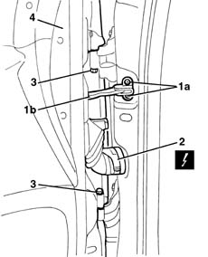

7210E36 R.R. FRONT SIDE DOOR
- Path
- Procedures > 72 PANELS AND FRAME > 7210 REMOVING REFITTING > 7210E external parts > 7210E36 R.R. FRONT SIDE DOOR
- Kind
- repair procedure (removal / refitting; the operation number is the code)
- Applies to
- all engines; all production periods
- Interactive page
- https://sloeber94.github.io/elrnDB-lYpsln/en/#/2429738
Applies to: all engines; all production periods
 Removing
Removing
 Refitting
Refitting1. Undo the bolt (1a) which secures the door check strap (1b) to the door pillar and close the door to push the check strap back in.
2. Disconnect the electrical connection.
 | Name | Connector |
|---|---|---|
2 | Rear coupling for /front door. driver's side |
| Name | Connector |
|---|---|---|
2 | Front passenger door/ rear coupling. |
3. Undo the hinge bolts.
4. Lift the doodr and remove it.

Applies to: all engines; all production periods
Refitting
RemovingRefit the door on the hinges.
Tighten the hinge bolts.
 | Fastening | Component | Ø | Value (daNm) |
|---|---|---|---|---|
- | Bolt | SIDE DOORS | M6 | 1.5 |
Connect the electrical connection.
Check the various appliances on the door are working properly.
Make the check strap come out and tighten the bolts.
| Fastening | Component | Ø | Value (daNm) |
|---|---|---|---|---|
- | Bolt | FRONT DOOR OPENING LIMITER | M6 | 1.5 |
Check the door alignment and, if necessary, 7005A14 front side door - adjust centering and moulding - includes adaptation of hinges and seals on door compartment .